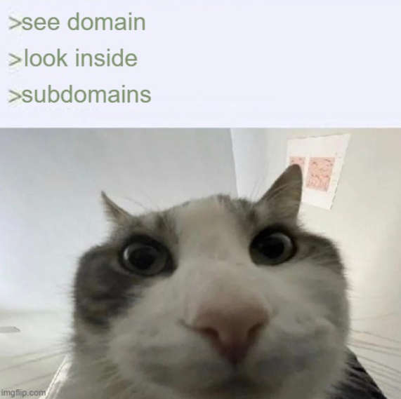

- bug lift - giving life to a silly little bug
- conway - a game of life made with p5.js
- hannon - lets you browse your youtube playlists all at once, without relying on youtube's janky interface
- finger pointer - a short-lived twitter trend, made interactive
- today - (useful) todo list with accounts & optimistic rendering because life is short (not open to public)
- todo-type - todo list that uses localstorage & has translations (I can only dev 1 type of app)
- wait - collection of handy tools, helpers and (more or less) usefull stuff